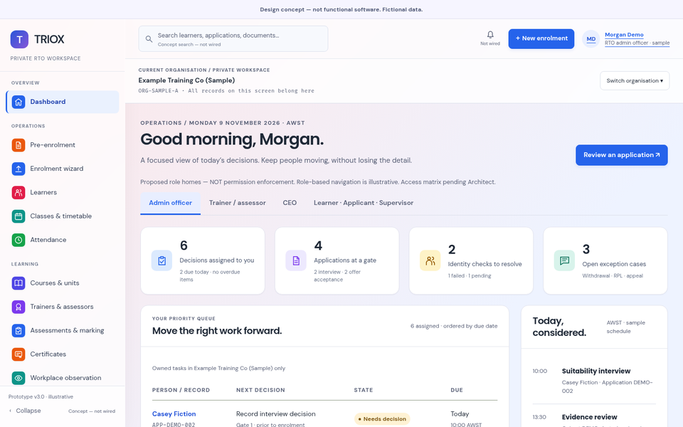
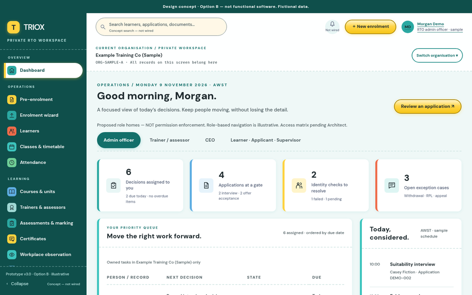
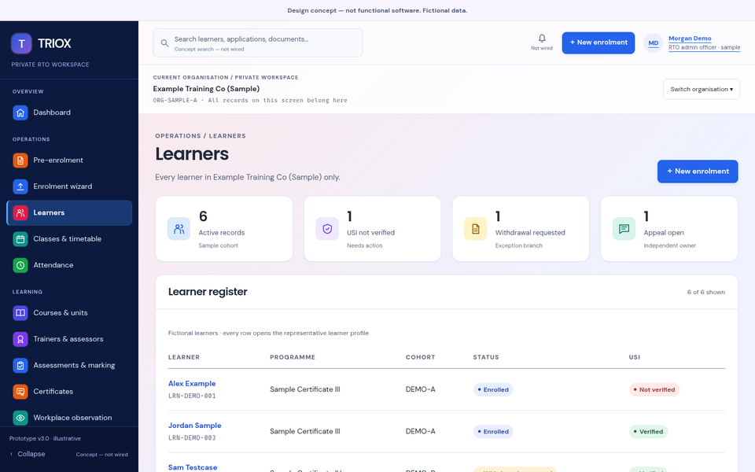
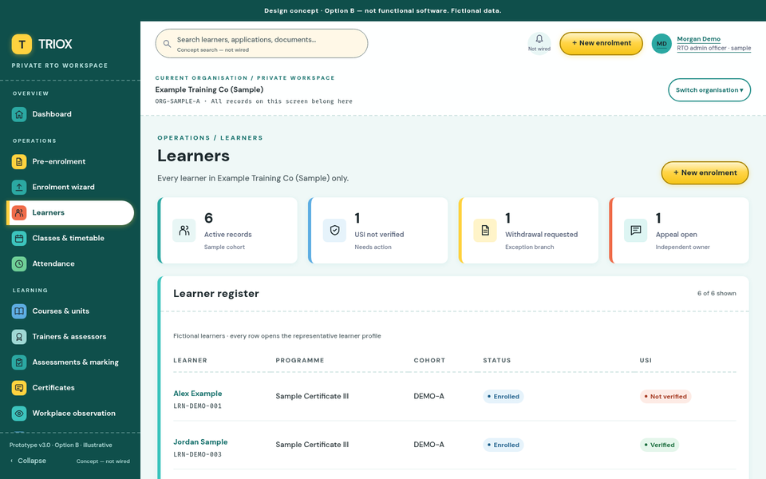
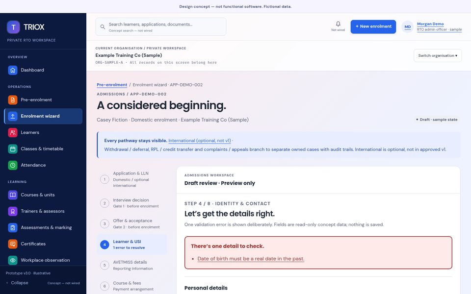
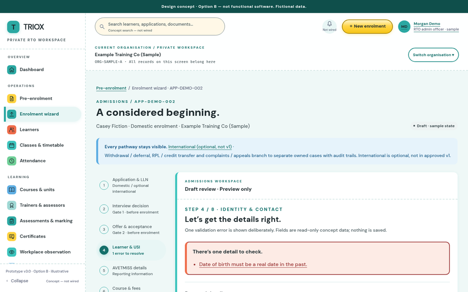
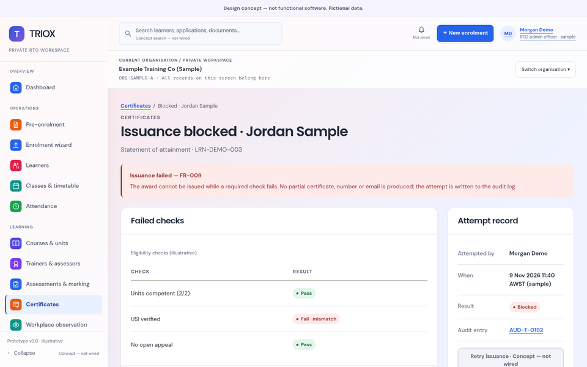
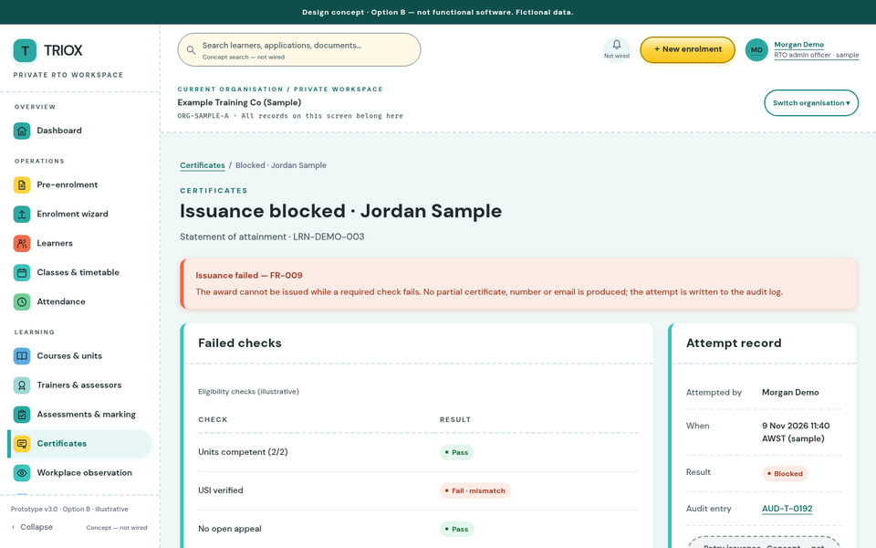
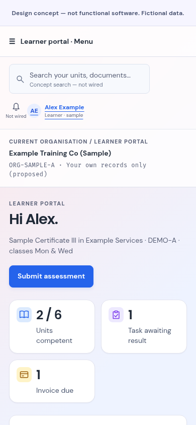
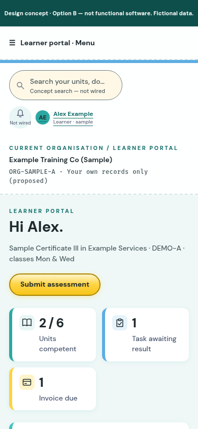

Key screens side by side
Select any screenshot to open that screen in its prototype.
Dashboard · role homes


Learners list


Enrolment wizard


Certificate issuance blocked (FR-009)


Learner portal · mobile 390px


What differs
| Aspect | Option A | Option B |
|---|---|---|
| Primary action | Solid blue button, white text | Gold pill button, dark text |
| Navigation | Deep-navy sidebar, tinted active row with blue bar | Deep-teal sidebar, white active pill with gold bar |
| Platform admin | Deep-violet sidebar, violet accents | Deep-teal sidebar, gold accents |
| Cards & status | Soft shadow, thin borders | Teal-tinted shadow, coloured 6px left edge, dashed dividers |
| Form fields | White | Cream |
| Type | Poppins headings, DM Sans body | System font stack (DM Sans fallback), extra-bold headings |